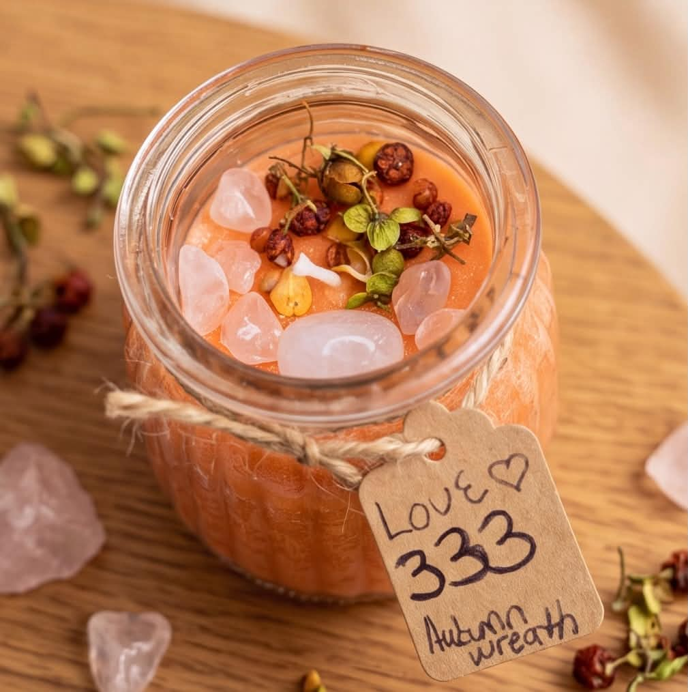

It started with love.
For herself.
THE WOMAN BEHIND THE FLAME
Before the brand,
there was her.
“Before Key to the Soul was a business, before there was a brand, a collection, or a single customer, there was me, at home, pouring a candle for a woman I was learning to love a little deeper: myself.”
One Love Candle. One intention to pour something into myself for a change instead of constantly pouring from an empty cup.
Read Keianna’s story
I wanted to create something that felt like peace. Something that reminded me to slow down, breathe, reconnect with myself, and make room for the woman I was becoming. I didn’t know that one little candle would grow into something bigger than me. I just knew how it felt to light that flame and be intentional about what I wanted to welcome into my life.
And honestly? Sometimes, that’s how the most meaningful things begin. Not with a perfect plan, but with a personal need, a little faith, and the courage to create something out of what you’re feeling.
That’s where Key to the Soul was born.
This brand was built around the things we don’t always say out loud. The heavy days. The overthinking. The emotional baggage. The seasons when life feels overwhelming, when you’ve been showing up for everybody else but struggling to show up for yourself. The moments when you know something has to change, even if you’re still figuring out what that looks like.
Because let’s be real: sometimes you don’t need another person telling you to stay positive. Sometimes you need a moment to yourself, a deep breath, a little silence, and the space to let that shit go.
And that’s exactly why creations like Let That Shit Go have such a special place in this brand. It’s more than a name that makes you laugh or a candle that smells good. It’s a reminder that you don’t have to carry everything. Every disappointment, every draining connection, every version of yourself you’ve outgrown, every piece of energy that no longer belongs in your next chapter. You are allowed to release it.
I want every candle to feel like an invitation back to yourself. A reason to romanticize your peace. A reminder to protect your energy, honor your feelings, set your intentions, and create a space where you can finally exhale.
Every piece is hand-poured with care and created with intention, because I believe the little things we do for ourselves matter. The quiet morning. The nighttime reset. The bath after a long day. The candle you light when you’re ready to stop carrying the world on your shoulders.
These moments might seem small, but sometimes the smallest rituals become the beginning of the biggest shifts.
Key to the Soul is about coming home to yourself.
It’s about self-love that goes deeper than the surface. Peace that you stop apologizing for. Boundaries that you stop feeling guilty about. Growth that doesn’t require you to explain yourself to everybody. It’s about learning that you can love people and still choose yourself. You can outgrow things without hating what they once meant to you. And you can start over as many times as your soul needs.
I created this brand from a place of wanting more intention, more peace, more meaning, and more connection to the energy I allow into my life. Now, I get to share that feeling with you.
So whether you’re manifesting something new, releasing something old, calling your power back, or simply trying to make it through the week without losing your mind, I hope you find something here that speaks to you.
Light your candle. Set your intention. Feel what you need to feel. Release what you’re ready to release.
With intention, Keianna